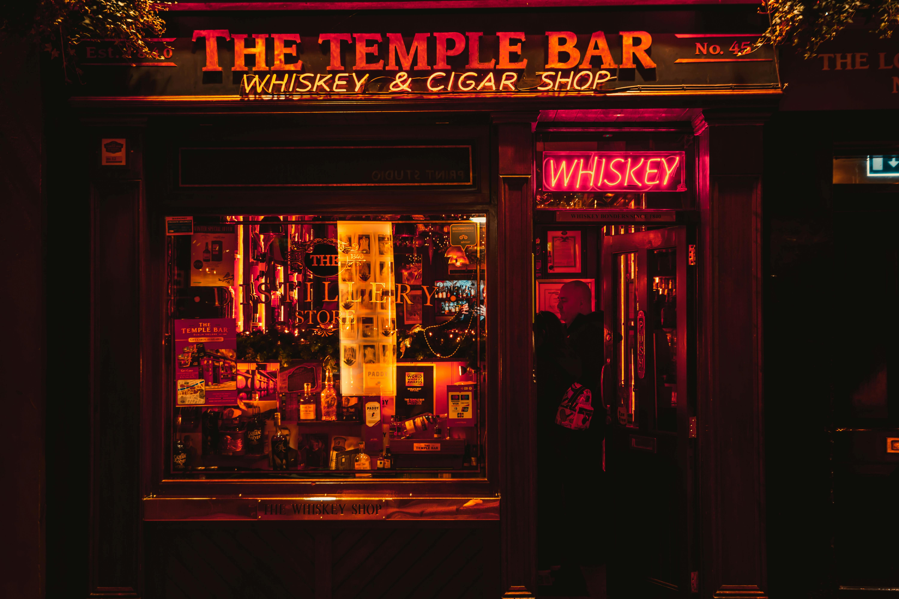

Tourist Attractions While visiting Dublin, consider seeing the following attractions Ireland has to offer:  Trinity College Library St. Patrick’s Cathedral Samuel Becket Bridge Historic Dublin Castle